HOURGLASSKERNEL - Oriented non-linear spatial hourglass filter.
Contents
Description
Compute the oriented non-linear spatial hourglass filter proposed in [Koht03] and also implemented in [VIGRA].
Syntax
f = HOURGLASSKERNEL( m, sigr, sigt, d, theta );
Inputs
m : size of the output filter.
sigr : variance in radial direction (in pixels); sigr=4 is a typical choice.
sigt : variance in angular direction (in radian); sigt=0.4 is a typical choice.
d : dimension of the relative input data.
theta : vector (of length p) with the sampled orientations used for computing the filters.
Output
f : (array of) matrix(ces) (all with size [m m]) storing the p oriented non-linear spatial filters that look like hourglasses.
Remarks
The hourglass kernel is defined as a polar separable function, where the radial part is a Gaussian, but the angular part modulates the Gaussian so that it becomes zero perpendicular to the local edge direction. The output of the filter at point 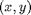 is given by the following equation:
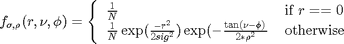
where 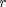 and 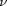 are the polar coordinates of the point :
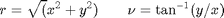
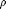 defines the width of the hourglass filter, the larger the value of the more the filter tends to become uniform, and 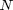 is a normalization factor constant that makes the kernel integrate to unity.
The dimension of the hourglass scale-space is defined by an initial scale 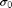, a final scale 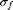, and a factor 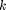 of scale change between successive levels. At each scale level 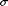, a local direction 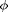 is calculated for each point in the image using a simple derivative function. Next the hourglass kernel is rotated according to the local edge orientation defined by 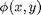 and applied to the point, so that smoothing only occurs along the edge.
The hourglass filter is typically applied to a gradient tensor, i.e. the Euclidean product of the gradient with itself. The hourglass shape of the filter can be interpreted as indicating the likely continuations of a local edge element. The parameter sigma determines the radius of the hourglass (i.e. how far the influence of the edge element reaches), and rho controls its opening angle (i.e. how narrow the edge orientation os followed). Recommended values are = 1.4 (or, more generally, two to three times the scale of the gradient operator used in the first step), and = 0.4 which corresponds to an opening angle of 22.5 degrees to either side of the edge [VIGRA].
References
[Koht03] U. Kothe: "Edge and junction detection with an improved structure tensor", Proc. of DAGM Symposium, LNCS 2781, pp. 25-32, Springer, 2003. http://hci.iwr.uni-heidelberg.de/Staff/ukoethe/papers/structureTensor.pdf
[Koht03b] U. Kothe: "Integrated edge and junction detection with the boundary tensor", Proc. IEEE ICCV, 2003. http://hci.iwr.uni-heidelberg.de/Staff/ukoethe/papers/polarfilters.pdf
[VIGRA] Source code and documentation available at http://hci.iwr.uni-heidelberg.de/vigra/doc/vigra/group__TensorImaging.html http://hci.iwr.uni-heidelberg.de/vigra/doc/vigra/orientedtensorfilters_8hxx-source.html
See also
Related: GAUSSKERNEL, DIRGAUSSKERNEL, EUCLIDKERNEL, CONVOLUTION. Called: MESHGRID.
Function implementation
function f = hourglasskernel( m, sigmar, sigmat, d, theta )
parsing parameters
error(nargchk(5, 5, nargin, 'struct')); error(nargoutchk(1, 1, nargout, 'struct'));
calculation
if length(theta)>1 f = zeros(m,m,length(theta)); for i=1:length(theta) f(:,:,i) = hourglasskernel(m, sigmar, sigmat, d, theta(i)); end return; end x = ((0:m(1)-1)-(m(1)-1)/2) / d(1); y = ((0:m(2)-1)-(m(2)-1)/2) / d(2); % in the (X,Y) plane [X,Y] = meshgrid(x,y); [Y,X] = meshgrid(x,y); r = sqrt(X.^2 + Y.^2); phi = atan2(Y,X); f = exp( - r.^2 / (2*sigmar^2) ); f = f .* exp( - tan(phi-theta).^2 / (2*sigmat^2) ); f = f / sum(f(:));
end % end of hourglasskernel